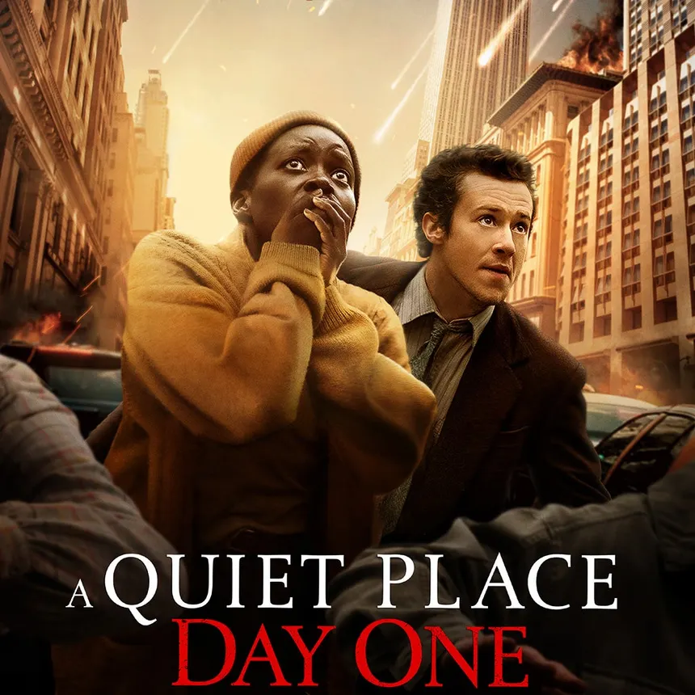
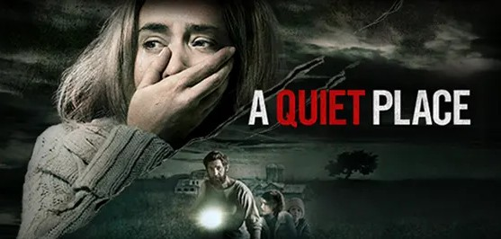
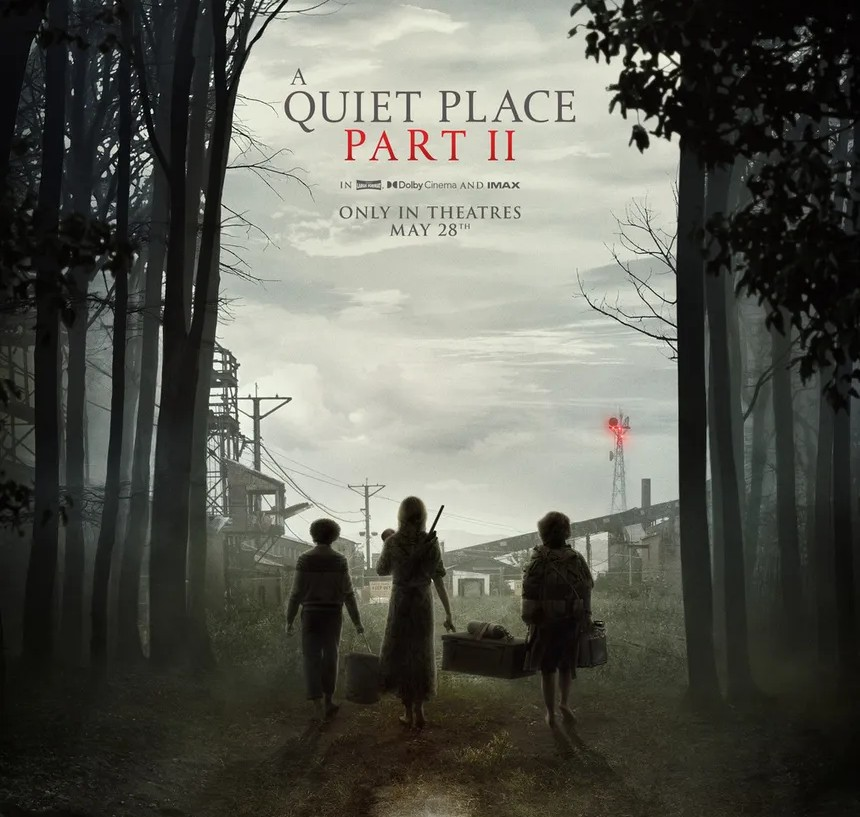

Let's Talk About the Movies!
(Spoiler Warning! If you have yet to see the movies mentioned (including: A Quiet Place, A Quiet Place 2, and A Quiet Place: Day One) then be prepared for spoilers ahead!)
Let's take a moment to recap a few key points for those who may have forgotten the movies and their plots, or for new viewers seeking a quick summary. It's important to note that the correct chronological order of the movies in the "A Quiet Place" series does not match their release order. The story begins with A Quiet Place: Day One, followed by A Quiet Place, and finally concludes with A Quiet Place Part II. (While A Quiet Place Part II features the Abbott family recounting their Day 1 experiences with the Death Angels landing on Earth, the timeline of the series progresses in the order mentioned above). So, let’s summarize the correct order of the A Quiet Place universe!

A Quiet Place: Day One
The film offers a closer look at the very first day of the invasion, providing audiences with the terrifying perspective of ordinary citizens caught unprepared. This movie follows the story of Sam (Samira), who is living her last days with terminal cancer, alongside her cat companion, Frodo, within New York City. Her story begins on an ordinary day until the Death Angels finally crash down from space upon the city, causing everything to fall into chaos. With civilization crumbling within mere hours, Sam meets and teams up with a man named Eric, and together they struggle to survive in their dense urban environment, which makes it harder to stay out of the way of the Death Angels and avoid noise, unlike the rural areas like the Abbotts. Sam's story highlights her physical endurance and emotional resilience as she confronts her own declining health while navigating the aftermath of the disaster. Ultimately, *Day One* sets the stage for the silence-driven survival strategies seen later in the series.
A Quiet Place
Many of us more than likely know this story! The story of the Death Angels landing on earth in this part of the story is more than a year later, after they had wiped out most of humanity. The Abbott family—Lee and Evelyn, the parents of their children, Regan, Marcus, and Beau—live on an isolated farm, communicating with one another in sign language to avoid piquing the interest of the aliens, thereby keeping themselves safe. Tragedy strikes when Beau, the youngest of the Abbott children, is killed by a Death Angel after playing with a noisy toy. Still grieving the loss of Beau, and with Evelyn heavily pregnant later on, the family has to prepare for how a baby can be silent in a world that no longer allows noise to survive. Due to noises being heard near the farmhouse, the aliens close in on the Abbott home, and Lee sacrifices himself to save his kids, leaving Regan and Marcus to protect their mother and newborn sibling. Regan eventually finds out that her cochlear implant interferes with the aliens, disabling them and offering the family a powerful new weapon to fight against them.
A Quiet Place Part .II
Following the previous movie, this film opens with a flashback to Day 1 for the Abbott family and how they faced the invasion of the Death Angels hurling down to earth. After the flashback, the story continues with the family after they lost Lee. Evelyn leads Regan, Marcus, and her newborn baby away from their devastated farmhouse to seek refuge elsewhere. They end up meeting a former family friend, Emmett, who has changed since his own family was lost. He was reluctant to help the family, but after Regan ran off to broadcast her cochlear implant’s signal over the radio. Along the way, they both see how humanity has changed—meeting both dangerous and friendly survivors—under the constant threat of the Death Angels. Regan’s bravery proves pivotal, as she succeeds in transmitting the feedback signal, giving hope that others can fight back against the monsters. The story ends with the Abbotts and Emmett fighting back more effectively, opening the possibility of broader resistance against the creatures.